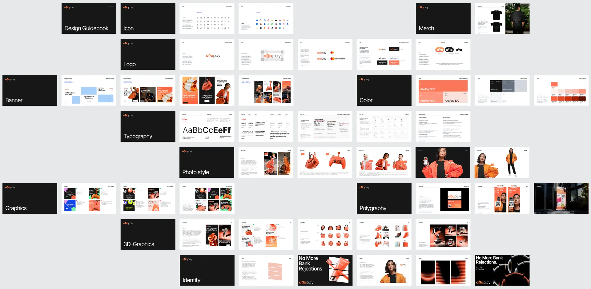
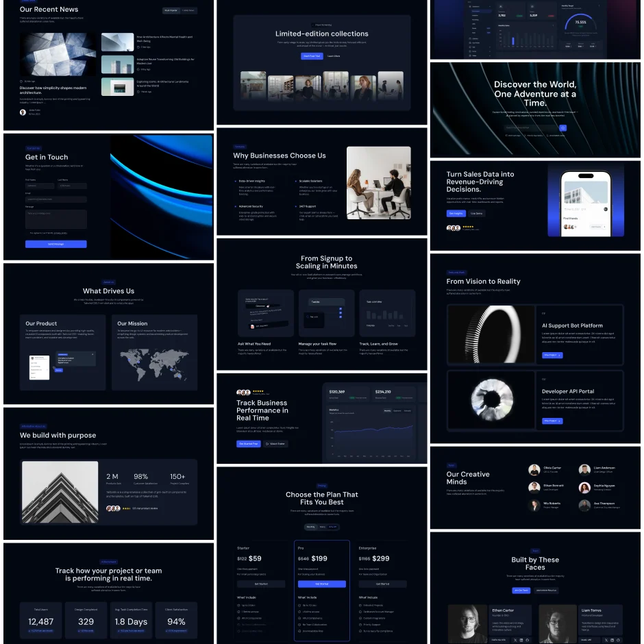
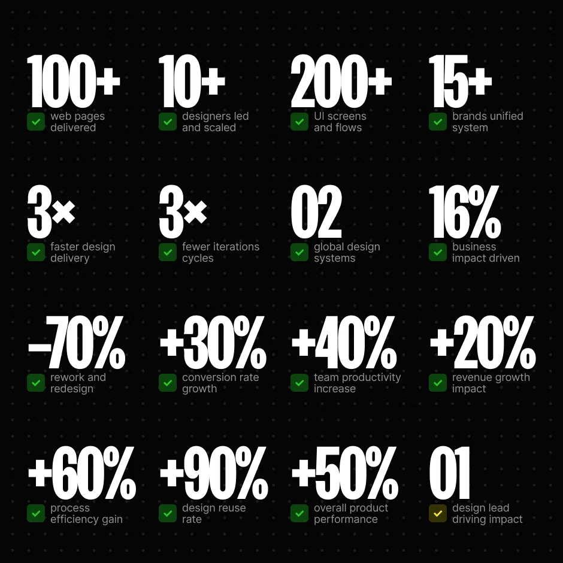

Fingular
A global neobank from Singapore for Asia's growing markets.
At Fingular I owned design end to end: product, marketing, brand strategy, systems and team — across more than fifteen brands. The company's big goal: open finance to two billion people.
Design had become the growth bottleneck: two junior generalists with no process in place couldn't keep up with rapid scaling. Work arrived as a random stream of verbal briefs — no standards, no documentation, no tokens or reusable components — so interfaces drifted, rework piled up, and a single screen took up to eight iterations. Hypotheses went untested. Product and marketing weren't aligned, and engineering often made the calls.
A design team is not a collection of people but a structured system of roles, skills and responsibilities. I rebuilt it from the ground up, hiring every designer personally: instead of two junior generalists, ten-plus mid and senior specialists with their own focus, a management layer, and a transparent growth path for everyone. I shipped two design systems — product and marketing — built on tokens, guidelines and reusable patterns, and put process on rails: tasks and deadlines in Jira, standards and documentation in Notion, sprint meetings and cross-team sync instead of verbal briefs, A/B tests instead of taste debates, AI on the routine work. In parallel I oversaw 15+ brands for local markets.
Design stopped being an on-demand service and became part of how the business runs: design's measurable contribution to revenue grew from 4% to 16%. The product reached 5.2M users, turned profitable in Malaysia within nine months, and won Best New Fintech Company APAC 2024.
- A single screen went from 8 iterations to 2; rework down 70%.
- Interface consistency +60%, team performance +45%.
- Time to market 2× faster, conversion +30%.
- In Malaysia the product turned profitable in 9 months.
- Best New Fintech Company APAC 2024.


